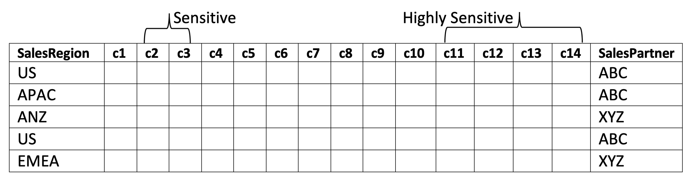
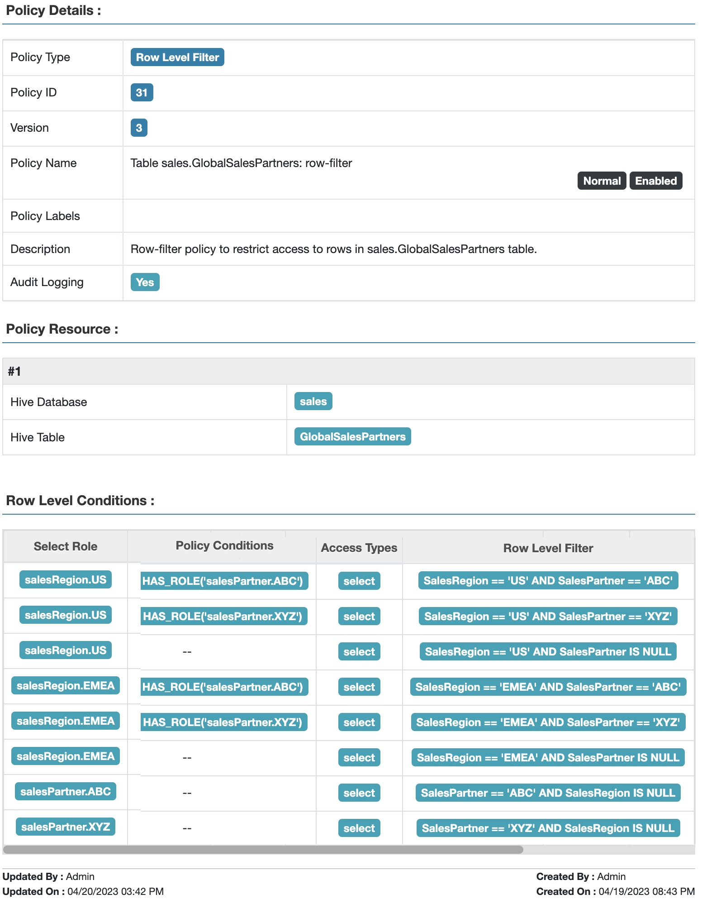
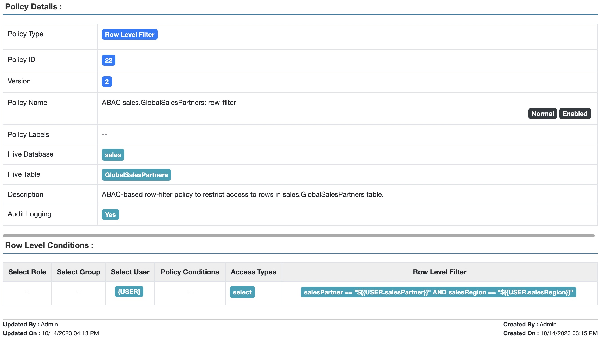
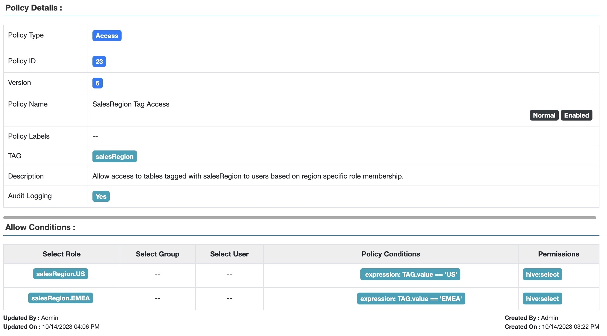
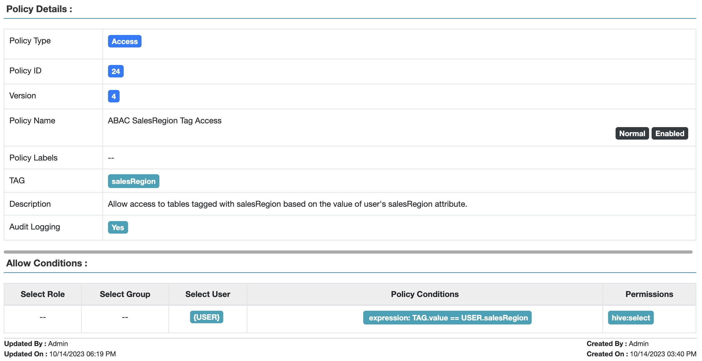

Barbara Eckman, Ph.D., Distinguished Architect, Comcast
Oct 15, 2023
Previously in Part 1 of this series we examined an increasingly complex series of use cases involving role membership and row filtering. While built-in Apache Ranger™ TBAC, RBAC, and row-filter based access policies are powerful, they may not be sufficient for complex access control constraints. As the numbers of row filters that must be simultaneously enforced rises, the number of roles and row filter conditions increases combinatorially and rapidly becomes difficult to manage.
This post introduces the principles of Attribute-based Access Control (ABAC) and shows how they enable us to avoid this potentially mushrooming complexity. Let’s recall the final use case from part 1.
The GlobalSalesPartners table includes info on which business partner (“ABC” or “XYZ”) produced the data, as well as the salesRegion where the sale occurred.

Recall our favorite users:
User |
Region |
Partner |
Bob |
US |
ABC |
Celestine |
EMEA |
ABC, XYZ |
Row-filter policies from part 1:
1. Users in salesRegion.US role have access to rows where salesRegion = “US”
2. Users in salesRegion.EMEA role have access to rows where salesRegion = “EMEA”
3. Users in salesPartner.ABC role have access to rows where salesPartner = “ABC”
4. Users in salesPartner.XYZ role has access to rows where salesPartner = “XYZ”

Fig 1. Apache Ranger™ Table GlobalSalesPartners: row-filter policy to restrict access based on sales region and sales partner
We noted previously that as the numbers of salesRegions and salesPartners rise, the number of roles and row filter conditions increases combinatorially, and rapidly becomes difficult to manage.
But what if Ranger policy engine had direct access to Bob‘s sales partners, and Bob‘s sales region, without reference to any roles he might be a member of? Then a row filter could be expressed this way, assuming Bob has access to data from only one sales region and sales partner
<partner attribute value in row> == <Bob’s partner> AND <sales region value in row> == <Bob’s region>
Now assume this can be generalized to work for all users:
<partner attribute value in row> == $USER.partner AND <sales region value in row> == $USER.region
In RBAC, the role to which a user is assigned membership is the central method of expressing what the user should be allowed access to. Bob is in the role partner.ABC, along with, say, Sarah and Thomas and Srikanth and Joon. Thus, all these users have access to partner ABC’s data.
In ABAC, the central method of expressing what the user should be allowed to have access to is the value of the user’s attributes. Bob’s partner attribute value equals “ABC”, along with the partner attribute of Sarah and Thomas and Srikanth and Joon. Just as in the RBAC case, all these users have access to partner ABC’s data.
But how do we program this in Apache Ranger? Apache Ranger uses a user-store, populated with users and their attributes typically loaded from LDAP, SCIM, Azure Active Directory (AAD), Okta, etc., by Apache Ranger usersync. If an attribute named partner is added to a user’s record on the identity provider, then that information will be gathered as part of the usersync and can be referenced within a Ranger policy condition as $USER.partner.
Assume that the UserStore has been populated with salesRegion and salesPartner attributes for Bob and Celestine as follows:
User |
salesRegion |
salesPartner |
Bob |
US |
ABC |
Celestine |
EMEA |
XYZ |
With ABAC, the 8 row filter conditions from the previous blog post become a single condition, matching the users’ partners and regions with the value in the salesPartner and salesRegion columns:

Fig 2. Apache Ranger™ Table GlobalSalesPartners: ABAC-based row-filter policy to restrict access based on sales region and sales partner
This policy works for all users, not just those with salesRegion or salesPartner access like Bob’s or Celestine’s.
Next, consider tables representing a single sales region, like USSales from blog post Part 1.
Resource |
Tag |
Tag Attribute |
Table: USSales |
salesRegion |
value=”US” |
Allow only users in the salesRegion.US role to access resources tagged with salesRegion.value = ”US”. Create a role-based (RBAC) tag policy that allows access to tagged tables based on the role membership of the user:

Fig 3. Apache Ranger™ Tag-based policy allowing access to tagged tables based on the user’s role membership
Using the RBAC method, we need to create a policy condition for each of the salesRegion.* roles. Depending on how many salesRegions a company defines, this could get large. And if they are continually being added or subtracted, the policy has to be commensurately updated.
Let’s use ABAC to greatly simplify this process, by creating a tag policy that allows table access to any user whose salesRegion attribute matches the attribute of the salesRegion tag:

Fig 4. Apache Ranger™ ABAC-based tag policy to allow access to tables based on the value of the user’s attribute.
As we have seen, ABAC makes policy creation and maintenance much easier! But what if the custodians of your Identity Provider are too busy to keep up with managing the additional attributes you need for ABAC? Is there another way to populate the UserStore? Yes! Check out Part 3 of this blog series to find out how you can retrieve UserStore entries from a variety of alternative sources!